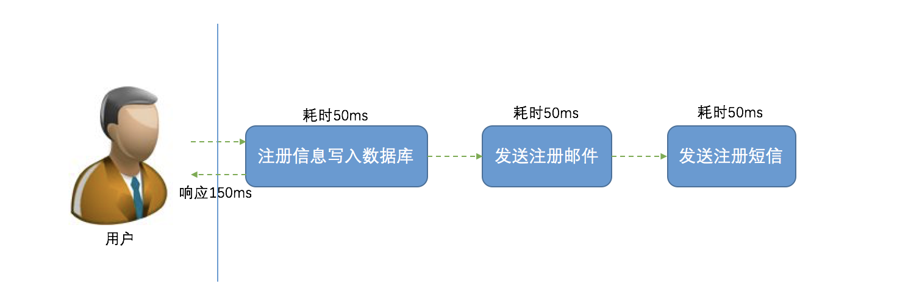
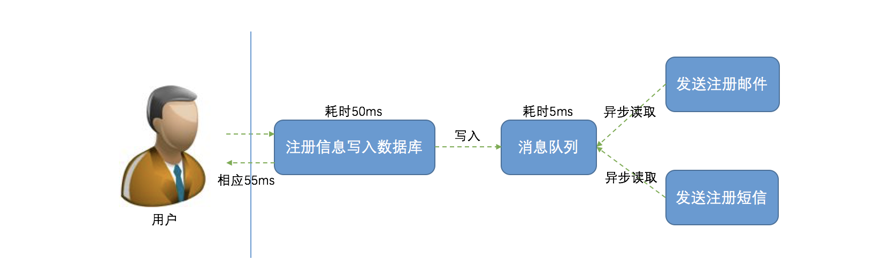
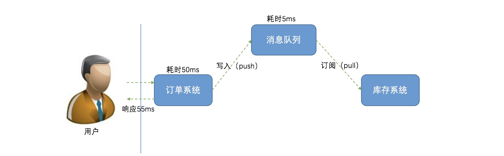

- 01 开篇词：从中间件开始学习分布式.md.html
- 02 走进分布式中间件（课前必读）.md.html
- 03 主流分布式缓存方案的解读及比较.md.html
- 04 分布式一致性协议 Gossip 和 Redis 集群原理解析.md.html
- 05 基于 Redis 的分布式缓存实现及加固策略.md.html
- 06 Redis 实际应用中的异常场景及其根因分析和解决方案.md.html
- 07 Redis-Cluster 故障倒换调优原理分析.md.html
- 08 基于 Redis 的分布式锁实现及其踩坑案例.md.html
- 09 分布式一致性算法 Raft 和 Etcd 原理解析.md.html
- 10 基于 Etcd 的分布式锁实现原理及方案.md.html
- 11 主流的分布式消息队列方案解读及比较.md.html
- 12 搭建基于 Kafka 和 ZooKeeper 的分布式消息队列.md.html
- 13 深入解读基于 Kafka 和 ZooKeeper 的分布式消息队列原理.md.html
- 14 深入浅出解读 Kafka 的可靠性机制.md.html
02 走进分布式中间件（课前必读）
1. 白话分布式系统
关于“分布式系统”的定义，《分布式系统原理和范型》一书中是这样阐述的：“分布式系统是若干独立计算机的集合，这些计算机对于用户来说就像是单个相关系统”。
关于上述定义，直白点，可以这样理解：
- 首先，分布式系统相对来说比较强大，至少由数台计算机组成。以阿里云、腾讯云、华为云等服务商为例，他们的数据中心计算机规模都在万台以上；
- 其次，虽然分布式系统很强大，但是“深藏不露”，对用户来说，根本感觉不到计算机集群的存在，与单机无异。
更进一步，从进程角度看，两个程序分别运行在两台计算机上，它们相互协作完成同一个服务（或者功能），从理论上讲，这两个程序所组成的系统，就可以称作是“分布式系统”。当然，这个两个程序可以是不同的程序，也可以是相同的程序。如果是相同的程序，我们又可以称之为“集群”。
1.1 分布式系统——应需求而生
分布式系统出现之前，软件系统都是集中式的，俗称单机系统。在很长的一段时期，单机系统通过升级硬件就能满足不断增长的性能需求，然而，随着互联网的飞速发展，高吞吐、高并发、低延迟逐渐成为“刚需”，单凭硬件升级已无能为力，分布式系统 “应需求而生”。
集中式系统跟分布式系统是完全相反的两个概念。集中式系统就是把所有的程序、功能都集中到一台主机上，进而对外提供服务。从用户的角度来看，集中式系统与分布式系统并没有什么不同。比如，打开手机 App 浏览网页，用户看到的只不过是服务器返回数据的呈现，至于服务器是单机还是集群，用户无感知，也无须感知。
既然如此，为何分布式系统会被广泛应用呢？原因很简单：需求驱动。
退回到20年前，那时的互联网远不像今天这么普及，计算机还只是作为辅助工具，典型的应用场景如： 企业级信息管理（生产信息、财务信息等）、图书馆书籍管理和查询等，数据量不过几百 GB ，用户数量不过几千人，一台服务器（单机系统）足以支撑。
然而，随着互联网时代的到来，情形已经完全不同。以一年一度的“双十一”电商狂欢节为例，2017年天猫双11全球狂欢节开场5分22秒，支付峰值达25.6万笔／秒，刷新全球纪录；同时诞生的还有数据库处理峰值记录，4200万次／秒。如此巨大的数据处理量，单机系统恐怕只能掩面而泣了。
1.2 分布式系统——双刃剑
分布式系统是由一组通过网络进行通信、为了完成共同的任务而协调工作的计算机节点组成的系统。分布式系统的出现是为了用廉价的、普通的机器完成单个计算机无法完成的计算、存储任务。其本质是利用更多的机器，实现更强大的计算、存储能力。
说得直白点，就像开餐厅，每天供应50个人用餐，一个厨师，一个灶台就够了；倘若每天供应5000人用餐，恐怕请一个食神也搞不定吧，怎么办呢？安排100个普通厨师，100个灶台同时开火，将5000人的用餐压力分散到各个厨师，并使用员工守则对厨师进行管理。
通常，只有在单机系统完全无法满足需求的时候，我们才考虑分布式系统。因为，分布式系统提供的服务与单机系统本质是一样的，但分布式系统更为复杂，会引入很多单机系统没有的问题，为了解决这些问题又会引入更多的机制、协议，进而带来更多的问题。鉴于此，单机系统能够解决的问题，不要盲目采用分布式系统。这一点很好理解：管理一个厨师很容易，管理100个厨师问题就多了。
2. 分布式系统特性
2.1 内聚性和透明性
分布式系统是建立在网络之上的软件系统。继承软件的特性，分布式系统同样具有高度的内聚性和透明性。
内聚性是指每一个节点高度自治；透明性是指系统对用户来说都是透明的，用户无法感知系统是如何实现的。
在《Distributed Systems Principles and Paradigms》一书中，作者对分布式系统的定义为：“A distributed system is a collection of independent computers that appears to its users as a single coherent system”。
2.2 可扩展性
分布式系统的设计初衷就是利用集群多机的能力来处理单个计算机无法处理的任务，当任务增加的时候，分布式系统的处理能力需要随之增强，通常有两种方式：其一，优化系统的性能或者升级硬件(Scale Up，即垂直扩展)；其二，增加计算单元（如服务器等）以扩展系统的规模（Scale Out，即水平扩展）。
一般来说，垂直扩展更容易实现，不过成本更高，且垂直扩展存在单点失效的可能。而水平扩展通常成本更低，更加可靠，不过相对于垂直扩展而言更难实现。
那么，究竟选择哪种扩展方式呢？这就需要全盘考虑，实际应用中，需要分布式系统处理的任务规模往往是变化的，理想的情形是：当任务量增加的时候，系统的处理能力可随之增强（比如增加服务器的数量）；当任务量减少的时候，系统的处理能力可以减弱（比如减少服务器的数量），以避免资源浪费，这就是所谓的动态伸缩。显然，垂直扩展并不具备动态伸缩的能力，因此，分布式系统通常采用的是水平扩展方式，不仅可以实现动态伸缩，还可以松耦合、提升系统的容错能力。
2.3 可用性
其标准定义为，在要求的外部资源得到保证的前提下，系统在规定的条件下和规定的时刻或时间区间内处于可执行规定功能状态的能力。以下通过一个计算公式来直观的感受可用性：
Availability = MTBF / (MTBF + MTTR)*100%
其中，MTBF（Mean Time Between Failure）是指相邻两次故障之间的平均工作时间，MTTR（Mean Time To Repair）是指系统由故障状态转为工作状态所需修复时间的平均值。通常，用 N 个9来表征系统可用性，比如99.9%（3-nines Availability），99.999%（5-nines Availability）。
图片出自：CSDN 博客
2.4 可靠性
与可用性不同，可靠性是指在给定的时间间隔和给定条件下，系统能正确执行其功能的概率。可靠性的量化指标是周期内系统平均无故障运行时间，可用性的量化指标是周期内系统无故障运行的总时间。这种“官方定义”比较晦涩，下面举一个简单的例子。
A 系统每年因故障中断10次，每次恢复平均要30分钟；B 系统每年因故障中断2次，每次需5小时恢复。则 A 系统可用性比 B 系统高，但可靠性比 B 系统差。
评价可用性：A>B
A 系统=
(365*24-10*0.5)/10/((365*24-10*0.5)/10 + 0.5)*100% = 99.943%B 系统=
(365*24-2*5)/2/((365*24-2*5)/2 + 5)*100% = 99.886%评价可靠性：A < B
A 系统=
(365*24-10*0.5)/10 = 875.5B 系统=
(365*24-2*5)/2 = 4375
2.5 高性能
不管是单机系统还是分布式系统，性能都是关键指标。不同的系统对性能的衡量指标是不同的，最常见的：高并发，单位时间内处理的任务越多越好；低延迟：每个任务的平均时间越少越好。分布式系统的设计初衷便是利用更多的机器，实现更强大的计算、存储能力，即实现高性能。
2.6 一致性
分布式系统为了提高可用性和可靠性，一般会引入冗余（副本）。为了保证这些节点上的状态一致，分布式系统必须解决一致性问题。一致性有很多等级，一致性越强，对用户越友好，但会制约系统的可用性；一致性等级越低，用户就需要兼容数据不一致的情况，但系统的可用性、并发性会好很多。关于一致性，会在下文“CAP理论简介”小节中详细介绍。
3. 分布式系统常见问题
计算机系统看似强大，但在实际应用环境中，由于一些不可控（或者说很难控制）因素，使得计算机系统十分脆弱，特别是在分布式系统中，更为明显。本节将介绍两种常见的分布式系统问题。
3.1 网络并没有那么可靠
分布式系统中，节点间通过网络通信，而网络并没有那么可靠。常见的网络问题有：网络分区、延时、丢包、乱序等。
消息丢失
消息丢失是最常见的网络异常。对于常见的 IP 网络，网络层不保证数据报文的可靠传递，在发生网络拥塞、路由变动、设备异常等情况时，可能出现发送数据丢失的问题。
网络分区
举例说明，某分布式系统部署于两个机房，机房间使用内部独立光纤链路。由于机房间的光纤链路故障，两个机房间通信中断，在此期间，两个机房内的节点相互通信正常，随之形成两个分区，即原来的分布式系统因网络分区形成了两个系统。
消息乱序
消息乱序是指节点发送的网络消息有一定的概率不是按照发送时的顺序依次到达目的节点。
数据错误
网络上传输的数据有可能发生比特错误，从而造成数据错误。通常使用一定的校验码机制可以较为简单的检查出网络数据的错误，从而主动丢弃错误的数据。
分布式系统三态
由于网络异常的存在，分布式系统中请求结果存在“三态”的概念。在单机系统中，我们调用一个函数实现一个功能，则这个函数要么成功、要么失败，只要不发生宕机，其执行的结果是确定的。
然而在分布式系统中，如果某个节点向另一个节点发起 RPC 调用，即某个节点 A 向另一个节点 B 发送一个消息，节点 B 根据收到的消息内容完成某些操作，并将操作的结果通过另一个消息返回给节点 A，那么这个 RPC 执行的结果有三种状态：“成功”、“失败”、“超时（未知）”，称之为分布式系统的三态。
3.2 节点故障无法避免
虽然单个节点的故障概率较低，但节点数目达到一定规模后，整个系统出故障的概率就变高了。分布式系统需要保证故障发生时，系统仍然是可用的，这就需要监控节点的状态，在节点故障的情况下将该节点负责的计算、存储任务转移到其他节点。
总而言之，分布式系统面临的挑战来自不确定性，不确定计算机什么时候宕机、断电，不确定磁盘什么时候损坏，不确定每次网络通信要延迟多久，也不确定通信对端是否处理了发送的消息。而分布式系统的规模又放大了这种不确定性。
4. CAP理论简介
在分布式环境下设计和部署系统时，有三个核心的系统需求：Consistency（一致性），Availability（可用性）和 PartitionTolerance（分区容忍性），但三者无法在分布式系统中同时被满足，并且最多只能满足其中两个，该理论简称 为 CAP。
CAP 理论最早是2000年由 Eric Brewer 教授在 PODC 的研讨会上提出猜想，后来 Lynch 等人进行了证明。该理论被认为是分布式系统领域的重要理论之一， 有着广泛的知名度，很多工程师将其作为衡量系统设计的准则。
4.1 一致性（Consistency）
如果系统对一个写操作返回成功，那么之后的读请求都必须读到这个新数据；如果返回失败，那么所有读操作都不能读到这个数据，对调用者而言数据具有强一致性（Strong Consistency）（又叫原子性 Atomic、线性一致性 Linearizable Consistency)。
4.2 可用性（Availability）
用户的每个请求都能接受到一个响应，无论响应是成功或失败，即服务在任何时刻都是可用的，这就要求系统当中不应该有单点的存在（如果服务是单节点部署，一旦节点宕机，服务便不可用了)，通常可用性都是通过冗余的方式来实现的，关于可用性的评价方式，在上面“分布式系统特性”小节中已经详细介绍，在此不再赘述。
4.3 分区容忍性（PartitionTolerance）
关于分区容忍性，Brewer 给出的定义是：“No set of failures less than total network failure is allowed to cause the system to respond incorrectly”， 即除了整个网络出现故障外，其它的故障都不能导致整个系统无法正确响应。分区容忍比较抽象，在此特别说明一下。
分布式系统中，节点间通过网络进行通信，然而可能因为一些故障，导致有些节点之间不连通，整个网络就分成了几块区域。数据就散布在了这些不连通的区域中，从而形成了分区。
当一个数据项只在一个节点中保存时，如果分区出现，那和该节点不连通的部分将无法访问这个数据了（即单点故障问题），这时的分区是无法容忍的。提高分区容忍性的办法就是将一个数据项复制到多个节点上（副本思想），在出现分区后，这一数据项就可能分布到各个区里，容忍性就提高了。
然而，要把数据复制到多个节点，就会带来一致性的问题，就是多个节点上面的数据可能是不一致的。要保证一致，每次写操作都要等待全部节点写成功，而等待期间系统是不可用的，从而带来可用性的问题。总的来说，数据存在的节点越多（副本越多），分区容忍性越高，但同时需要复制、更新的数据就越多，一致性就越难保证。为了保证一致性，更新所有节点数据所需要的时间就越长，可用性就会降低。
4.4 CAP——鱼与熊掌不可兼得
根据 CAP 理论，在分布式系统中，CAP 三者不可能同时被满足，在设计分布式系统时，工程师必须做出取舍，一般认为，CAP 只能选择其二。
CA without P
放弃 P（分区容忍），以保证 C（强一致性）和 A（可用性）。其实分区容忍并不是能否放弃的问题，只能是阻止，即不允许分区出现，一种直接的策略就是所有服务部署在一台服务器上，退化为单机系统。
这里存在一个争议问题，即怎样才算“舍弃 P”？其含义并不明确。
在分布式系统中，分区是无法完全避免的，设计师即便舍弃分区容忍，就一定可以保证一致性和可用性吗？当分区出现的时候，还是需要在 C 和 A 之间做出选择：选择一致性则需等待分区恢复，在此期间牺牲可用性；选择可用性，则无法保证各个分区数据的一致性。
某种意义上，舍弃分区容忍是基于一种假设，即分区出现的概率很低，远低于其它系统性错误。基于不存在分区问题的假设，CA 之间仍然存在矛盾：为了保证服务的可用性，那就必须避免单节点故障问题，即服务需部署在多个节点上，即便其中一个节点故障而不能提供服务，其它节点也能替代它继续提供服务，从而保证可用性；但是，这些服务是分布在不同节点上的，为了保证一致性，节点之间必须进行同步，任何一个节点的更新都需要向其它节点同步，只有同步完成之后，才能继续提供服务，而同步期间，服务是不可用的，因此，即便没有分区，可用性和一致性也不可能在任何时刻都同时成立。
对于分布式系统，鉴于分区不可避免，通常不会考虑舍弃分区容忍，同时考虑到分区出现的概率极低，可以采取一些策略来平衡分区对一致性和可用性的影响，这对设计师来说是一个不小的挑战，在本课程的后续章节中，我会结合具体的应用实例进一步说明。
CP without A
放弃 A（可用性），一旦分区发生，部分节点之间失去联系，为了保证一致性，需要等待受影响的服务所在的节点数据一致（本质上就是等待分区恢复），而等待期间无法对外提供服务。如此，CP 也是可以保证的，很多传统的数据库分布式事务都属于这种模式。
AP wihtout C
放弃 C（一致性），保证高可用并允许分区。一旦分区发生，节点之间可能会失去联系，为了高可用，每个节点只能用本地数据提供服务，而这样会导致全局数据的不一致性。。
5. 分布式中间件——缓存
缓存是一种用于提高系统响应速度、改善系统运行性能的技术。对于一个服务，其性能瓶颈往往都在 DB，传统关系型存储尤甚。从磁盘中读取数据，IO 瓶颈是非常明显的，而缓存通常是基于内存的，比 DB 从磁盘读数据快两个数量级。
分布式缓存主要包含以上几大特性：
- 高性能：当传统数据库面临大规模数据访问时，磁盘 I/O 往往成为性能瓶颈，从而导致过高的响应延迟。分布式缓存将高速内存作为数据对象的存储介质，数据以 key/value 形式存储，理想情况下可以获得 DRAM 级的读写性能；
- 动态扩展性：支持弹性扩展，通过动态增加或减少节点应对变化的数据访问负载，提供可预测的性能与扩展性，同时，最大限度地提高资源利用率；
- 高可用性：包含数据可用性与服务可用性两方面。基于冗余机制实现高可用性，无单点失效问题，支持故障的自动发现，透明地实施故障切换，不会因服务器故障而导致缓存服务中断或数据丢失，动态扩展时自动均衡数据分区，同时保障缓存服务持续可用；
- 易用性：提供单一的数据与管理视图；API 接口简单且与拓扑结构无关；动态扩展或失效恢复时无需人工配置；自动选取备份节点；多数缓存系统提供了图形化的管理控制台，便于统一维护。
典型应用场景主要有：
- 页面缓存：用来缓存 Web 页面的内容片段，包括 HTML、CSS 和图片等，多应用于社交网站等；
- 应用对象缓存：缓存系统作为 ORM 框架的二级缓存对外提供服务，目的是减轻数据库的负载压力，加速应用访问；
- 状态缓存：缓存包括 Session 会话状态及应用横向扩展时的状态数据等，这类数据一般是难以恢复的，对可用性要求较高，多应用于高可用集群；
- 并行处理：通常涉及大量中间计算结果需要共享；
- 事件处理：分布式缓存提供了针对事件流的连续查询处理技术,满足实时性需求。
6. 分布式中间件——锁
在多线程并发场景下，为了保证共享资源在同一时刻只能被同一个线程操作，需要对共享资源进行互斥控制，即加锁。对单进程应用而言，部分编程语言内置的锁机制便足以保证并发安全，如 Java 语言可用 synchronized 和 Lock 来实现锁。然而，由于分布式系统多线程、多进程并且分布在不同节点，需要一种跨 JVM 的互斥机制来控制共享资源的访问，这就是分布式锁要解决的问题。
6.1 预备知识
原子性问题
所谓原子性，指的是一个操作不可中断，即在多线程并发的环境下，一个操作一旦开始，就会在同一个 CPU 时间片内执行完毕。如果同一个线程的多个操作在不同的 CPU 时间片上执行，由于中间出现停滞，后面的操作在执行时可能因某个共享数据被其它线程修改，而该修改并未同步到当前线程中，导致当前线程操作的数据与实际不符，这种由于执行不连贯导致的数据不一致问题被称作原子性问题。
可见性问题
可见性问题的出现与线程访问共享数据的方式有关。线程访问堆（方法区）中的变量时，先在栈中建立一个变量的副本，修改后再同步到堆中。如果一个线程刚建立副本，这时另一线程修改了变量，尚未同步到堆中，这时就会出现两个线程操作同一变量的同一种状态的现象，比如 i=9，变量 i 的初始值为9，每一个线程的操作都是减1。两个线程 A 与 B 同时访问变量，B 先执行 i-1，在将结果 i=8 同步到堆中前，A 线程也执行 i-1，这时 i=9 的状态就被执行两次，出现线程安全问题。
线程安全问题产生的原因在于一个线程对共享数据的修改不能立即为其它线程所见。
有序性问题
为了提高执行效率，CPU 会对那些没有依赖关系的指令重新排序，重新排序后的执行结果与顺序执行结果相同。例如，在源代码中：
int a=0;
int b=1;
CPU 在执行时可能先执行 int b=1;，接着执行 int a=0;，执行结果与顺序执行结果相同。 指令重排在单线程环境下是安全的，在多线程环境下就可能出现问题。比如下面这个例子。
线程 A：
String str = "hello world!";//指令1
boolean flag = false;//指令2
线程 B：
while(flag)
{
doSome();
}
str.toUpperCase();//指令3
如果线程 A 顺序执行，即执行指令1，再执行指令2，线程 B 的执行不会出现问题。指令重排后，假如线程 A 先执行指令2，这时 flag=false，切换到线程 B，终止循环，执行指令3，由于 str 对象尚未创建就会出现空指针异常。
6.2 锁机制
上一小节中的问题都是多线程并发场景中的常见问题，其根源在于：对共享资源的争夺。为了解决这类问题，Java 提供了很多策略，如 volatile 关键字，可以禁止指令重排，从而避免有序性的问题；对于原子性问题和可见性问题，在高并发场景下，为了保证共享资源在同一时刻只能被同一个线程执行，需要对公共资源进行互斥控制，即加锁。
Java 提供了两种内置的锁的实现：由 JVM 实现的 synchronized 和 JDK 提供的 Lock，对于单进程应用来说，使用 synchronized 或 Lock 来实现锁，足以保证并发安全。
6.3 synchronized 及 Lock 的实现原理
synchronized 本质上是通过锁来实现的。对于同一个代码块，为了实现多个线程在一个时刻只能有一个线程执行，需要在某个地方做个标记，每个线程都必须能看到它。当标记不存在时，某个线程可以设置该标记，其余后续线程发现已经有标记了，则等待拥有标记的线程结束同步代码块取消标记后，再去尝试设置标记。这个标记可以理解为锁。
不同地方实现锁的方式也不一样，只要能满足所有线程都能看得到标记即可。如 Java 中 synchronize 是在对象头设置标记；Lock 接口的实现类的基本思想是，用一个 volitile 修饰的 int 型变量，保证每个线程都能拥有对该 int 的可见性和原子修改。
6.4 分布式场景
从上面的分析可以看出，Java 提供的两种锁机制有效的前提是：同一个进程内有效。但是，随着业务发展，原单机部署的系统被演化成分布式系统后，由于分布式系统多线程、多进程并且分布在不同物理机上，这将使原单机部署情况下的并发控制锁策略失效。为了解决这个问题，就需要一种跨 JVM 的互斥机制来控制共享资源的访问，这就是分布式锁要解决的问题。
实现分布式锁需要依赖一个第三方系统，此系统需要满足高可用和较强的一致性，同时能应付高并发的请求。常见的分布式锁实现方式有三种：数据库、缓存、分布式协调系统。
7. 分布式中间件之消息队列
消息队列中间件是分布式系统中重要的组件，主要解决应用耦合、异步消息、流量削锋等问题。它可以实现高性能、高可用、可伸缩和最终一致性架构，是大型分布式系统不可缺少的中间件。
消息队列在电商系统、消息通讯、日志收集等应用中扮演着关键作用，以阿里为例，其研发的消息队列（MQ）服务于阿里集团超过11年，在历次天猫双十一活动中支撑了万亿级的数据洪峰，为大规模交易提供了有力保障。目前在生产环境中，使用较多的消息队列有 ActiveMQ、RabbitMQ、ZeroMQ、Kafka、MetaMQ，RocketMQ 等。
分布式消息队列的特点主要有：
- 速度快、高吞吐量、分布式、多分区；
- 支持动态扩展；
- 将数据持久化到硬盘以及副本防止数据丢失；
- 支持多消费者；
- 支持 Online（实时消费）和 Offline（离线消费，比如按天消费）的场景。
7.1 分布式消息队列的典型应用场景
异步处理
支持异步通信协议，消息的发送者将消息发送到消息队列后可以立即返回，不用等待接收者的响应。消息会被保存在队列中，直到被接收者取出。消息的发送与处理是完全异步的。下面通过一个例子来说明。
对于大多数应用，在用户注册后，都需要发注册邮件和注册短信。传统的做法有两种：
1. 串行方式：将注册信息写入数据库成功后，发送注册邮件，再发送注册短信。以上三个任务全部完成后，返回给客户端，如下图示:

2. 并行方式：将注册信息写入数据库成功后，发送注册邮件的同时，发送注册短信。以上三个任务完成后，返回给客户端。与串行的差别是，并行的方式可以提高处理的效率。
接下来，我们引入消息队列，来实现异步处理。
将注册信息写入数据库成功后，将消息写入消息队列，然后立即返回成功；此后，邮件系统和短信系统分别从消息队列中获取注册信息，再发送注册邮件和短信。很明显，借助消息队列的异步处理能力，将极大的提高响应速度。

应用解耦
以电商 IT 架构为例，在传统紧耦合订单场景里，客户在电商网站下订单，订单系统接收到请求后，立即调用库存系统接口，库存减一，如下图所示：
上述模式存在巨大风险：
- 假如库存系统无法访问（升级、业务变更、故障等），则订单减库存将失败，从而导致订单失败；
- 短时间内大量的请求，频繁查询库存，修改库存，库存系统负载极大。
我们引入消息队列，解除强耦合性，处理流程又会怎样呢？
订单系统中，用户下单后，订单系统完成持久化处理，将消息写入消息队列，返回用户订单下单成功，此时客户可以认为下单成功。消息队列提供异步的通信协议，消息的发送者将消息发送到消息队列后可以立即返回，不用等待接收者的响应。消息会被保存在队列中，直到被接收者取出。
库存系统中，从消息队列中获取下单信息，库存系统根据下单信息进行库存操作。

流量削锋
像双11秒杀、预约抢购等活动，通常会出现流量暴增，当外部请求超过系统处理能力时，如果系统没有做相应保护，可能因不堪重负而挂掉。
这时，我们可以引入消息队列，缓解短时间内高流量压力：
- 用户的秒杀请求，服务器接收后，首先写入消息队列，然后返回成功。假如消息队列长度超过最大数量，则直接抛弃用户请求或跳转到失败页面；
- 秒杀业务根据消息队列中的请求信息，再做后续处理（根据数据库实际的select、insert、update 能力处理注册、预约申请）。
消息通讯
消息通讯很好理解，以微信群聊为例：
- A 通过客户端发送消息到群里，服务端将消息写入消息队列；
- 消息队列，负责消息数据的接收，存储和转发；
- B 通过客户端查看群消息，订阅并消费消息队列中的信息。
8. 总结
本文首先介绍了单机系统到分布式系统的演进，并对分布式系统的特性和常见问题进行了阐述。而后进入正题，从 CAP 理论切入，介绍了三大分布式中间件：分布式缓存、分布式锁以及分布式消息队列。该文涉及到了很多理论知识，是学习本课程重要的基础知识，请大家好好理解。
参考文献与致谢
本文的一些图片和文字引用了一些博客和论文，尊重原创是每一个写作者应坚守的底线，在此，将本文引用过的文章一一列出，以表敬意：
- 什么是分布式系统，如何学习分布式系统
- 浅谈分布式缓存那些事儿
- 多线程并发常见问题
- 分布式缓存那些事儿
- 并发并行与分布式系统 CAP 理论中的 P 到底是个什么意思？
- CAP 理论基础（注解）
- 浅谈分布式缓存那些事儿